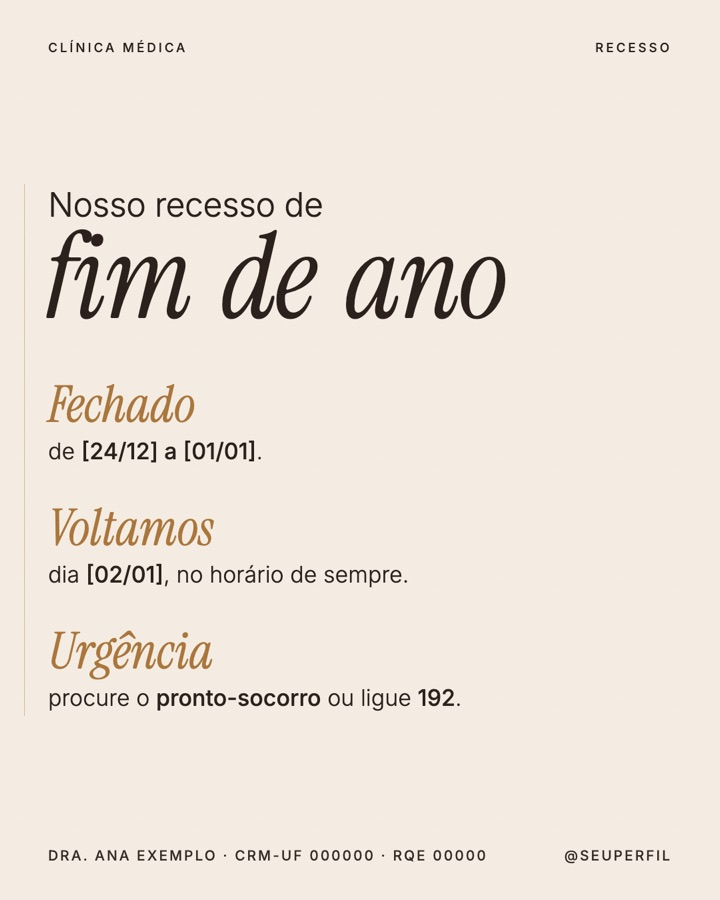
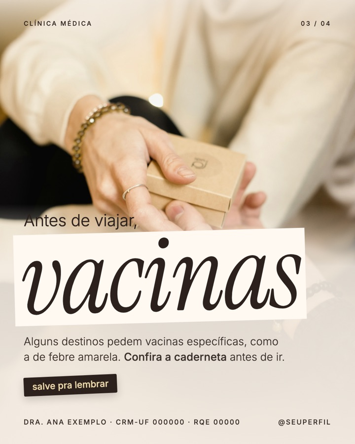
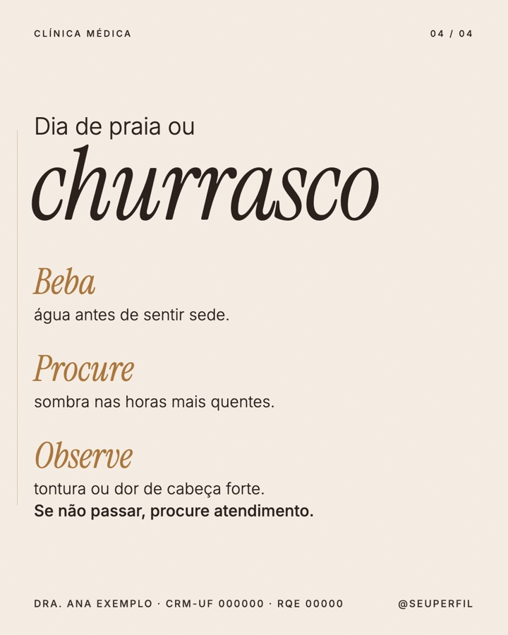

Pack de fim de ano pra médicos
O dezembro do consultório, pronto.
14 artes pro Instagram do consultório, com cuidados de saúde pro calor das festas.




Perfil de exemplo. Nome, CRM e @ você troca pelos seus.
O carrossel de 6 telas
O verão e as festas (bebida e desidratação, remédio de uso contínuo na viagem, vacinas antes de viajar, sinais de alerta no calor).


Arraste pro lado. Toque numa arte pra ver em tela cheia.
4 posts pro feed
Feliz Natal, recesso com orientação de urgência, Feliz 2027 e agradecimento. Formato 1080×1350, que aparece inteiro no feed.


4 stories
Caixa de perguntas, enquete sobre exames de rotina, aviso de recesso e brinde de boas festas. Dois deles têm o espaço marcado pra você colar a caixinha de perguntas e a enquete do Instagram.


Quando postar cada uma
Dezembro junta calor, bebida, viagem e remédio esquecido em casa.
Começo de dezembro
O carrossel “4 cuidados de saúde no calor”, pra abrir o mês.
Antes de fechar
“Nosso recesso de fim de ano” no feed e “Recesso de fim de ano” nos stories.
Semana do Natal
Caixinha de perguntas e enquete nos stories.
24 e 25 de dezembro
“Casa cheia, saúde em dia e um Feliz Natal” no feed e “Brinde com quem você ama. Saúde!” nos stories.
Virada do ano
“Feliz ano novo 2027” no feed.
Na volta, em janeiro
“Obrigada pela confiança em 2026” no feed e o convite da última tela do carrossel, “Janeiro é bom pra pôr os exames em dia”.
Escrito dentro das regras do CFM
Espaço pro seu nome, CRM, RQE e @ em todas as artes, como pede a Resolução CFM 2.336/2023. Textos sem alarmismo, sem promessa de resultado e sem preço.
Se você mudar os textos, confira se continuam dentro da regra.
Como você recebe
- Paga na KiwifyPix, cartão ou boleto. A Kiwify processa o pagamento e guarda os arquivos.
- Recebe o acesso por e-mailCom o login da área de membros. No Pix e no cartão é na hora. No boleto, quando ele compensa.
- Baixa a pasta
carrossel6 PNG · 1080×1350posts4 PNG · 1080×1350stories4 PNG · 1080×1920canva-posts.pdf10 páginascanva-stories.pdf4 páginas
- Troca seus dados e postaNo Canva você troca nome, @, telefone, datas e, se quiser, as fotos de exemplo (banco de imagem com licença livre).
Seu dezembro pronto por R$ 27
- Carrossel de 6 telas
- 4 posts de feed
- 4 stories
- PNG em alta e PDF pro Canva
7 dias de garantia. Se não gostar, pede o reembolso na Kiwify dentro de 7 dias e recebe o dinheiro de volta.
Pagamento seguro. Pix, cartão ou boleto, processado pela Kiwify.
Dúvidas
Preciso saber design?
Não. No Canva você clica no texto e troca o nome, o @, o telefone e as datas. O resto já está pronto.
Como eu recebo?
Assim que o pagamento é aprovado, chega um e-mail da Kiwify com o acesso à área de membros. No Pix e no cartão é na hora. No boleto, quando ele compensa, o que pode levar até 3 dias úteis.
Os PNGs já vêm com os meus dados?
Não. Eles vêm com dados de exemplo (Dra. Ana Exemplo, CRM-UF 000000 · RQE 00000, @seuperfil). Pra sair com os seus, edite os PDFs no Canva.
As fotos são minhas?
As fotos de exemplo são de banco de imagem com licença livre (Unsplash). Ficam bonitas como estão, mas com fotos suas o perfil fica com a sua cara.
Posso ter problema com o conselho?
Os textos foram escritos pensando nas regras de publicidade da sua profissão. Espaço pro seu nome, CRM, RQE e @ em todas as artes, como pede a Resolução CFM 2.336/2023. Textos sem alarmismo, sem promessa de resultado e sem preço. Se você mudar os textos, confira se continuam dentro da regra.
E se eu não gostar?
Você tem 7 dias de garantia. Pede o reembolso pela Kiwify dentro desse prazo e o dinheiro volta.
Até quando dá pra usar?
As artes são pro período de 1º de dezembro até a volta em janeiro. O post de ano novo está com 2027.
Quem fez

Faço artes de Instagram pra consultórios e negócios locais, e montei este pack com o que todo perfil precisa no fim de ano: conteúdo útil, o aviso de recesso ou de horário e um convite pra janeiro.